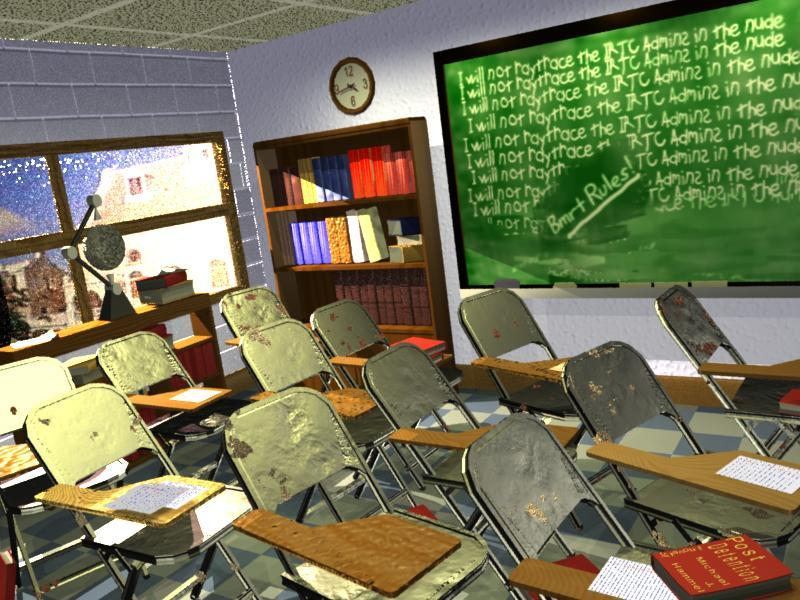

Graphics Muse
More...

|

My Entry in the March/April IRTC - a case study in learning to
use RenderMan and BMRT
One reason I took so long to get down to writing the Muse column this month
was that I was hard at work on an entry in the IRTC, the Internet Relay
Tracing Competition, which I help administer. I've been an active
participant in the IRTC since its restart back in May 1996 but have only
actually entered one competition. So this round had a special meaning for
me. I don't often have the time to work on entries unless something else
suffers. In this case, it was last months Muse column. To be honest,
however, I was also using this entry to learn more about RenderMan, BMRT
and in particular, the RenderMan Shading Language. Nothing is quite such a
a teacher as experience. And my entry in the IRTC was a wonderful teacher.
Below I've included the text file which accompanies my entry in the
IRTC. All entries must have this file. It describes the who/what/how and
so forth relating to an entry. I'll let the text file describe what I did,
who helped me do it, and some of the issues I encountered. I hope you find
this useful information.
| EMAIL: |
mjhammel@csn.net |
| NAME: |
Michael J. Hammel |
| TOPIC: |
school |
| TITLE: |
Post Detention |
| RENDERER USED: |
BMRT |
| TOOLS USED: |
Linux, AC3D, BMRT, Gimp 0.99.8,
wc2pov, xcalc, xv |
| RENDER TIME: |
about 4 hours |
| HARDWARE USED: |
Cyrix P166 (133Mhz)
based Linux system, 64M memory |
|

Post Detention - Full size image is 800x600 / 102k
|
IMAGE DESCRIPTION:
Pretty simplistic, really. Its a school room, just after detention has let
out. You can tell that detention has let out by the writing on the chalk
board and the time displayed by the clock on the wall. The sun is starting
to get low outside, which causes the types of shadows you can see on the
bookshelf. All the students who were in detention are required to read the
latest New York Times bestseller titled "Post Detention". Its written by
some author who is rumored to do 3D graphics on the side. You can see the
book on the desk in the lower right corner of the image.
DESCRIPTION OF HOW THIS IMAGE WAS CREATED:
I used this image to learn to use RenderMan and BMRT. I find I like these
tools a bit better than POV-Ray, mostly because I can write C code to
create models if I want (although I didn't for this particular scene) and
the shader language allows a bit more control than POV's. I still have
much to learn to make real use of these features, however.
I started with some canned models from 3DCafe: a chair, a couple of
bookcases, and some books. I had to convert the chair from 3DS to DXF so I
could then import it into AC3D. Once I had it in the modeler, I broke the
chair into two pieces - the arm and the rest of the chair. I did this so I
could texture them seperately (note that in the 3DS format these pieces may
have already been seperate, but after the conversion to DXF they were a
single entity). I also sized the chair to be a common unit size and
centered it on the origin. This unit size was used on all models so that
the real sizing and positioning could be done in the RIB file.
The book case only needed resizing but the books had to be broken into a
cover and "text pages". The latter are a single entity that were textured
with a matte finish. The covers were textured individually. All the books
are basically the same book sized differently and placed in the bookcase
from within AC3D. This provided relative positioning for the books in the
bookcase, after which any other translations would maintain that relative
positioning. Books on the chairs or floor were done similarly.
The walls are simple polygons or bilinear patches. The windowed wall
turned out to show problems in the way AC3D does polygons for RIB output.
I had to convert this wall from polygons to a set of bilinear patches (see
the May issue of the Graphics Muse for
how to make a hole in a wall using bilinear
patches)
in order for the texture to be applied evenly over all of
the patches. This problem also showed up when trying to apply texture maps
to the chalk board. It apparently has to do with vertex ordering. I had
to change the chalkboard to a bilinear patch too. I may have to write my
own models for anything that uses texture maps in the future instead of
using AC3D. To his credit, I haven't told Andy (AC3D's author) about this
yet and he's been very good about addressing any problems I've found in the
past.
An important aspect of this image is the tremendous help I got from Larry
Gritz, the author of BMRT. He offered some special shaders, although I
only used one of them (the one for the ceiling tiles). The biggest help
was very constructive criticism and tips for things too look for in my
code. For example, he pointed out that I was probably using the parameters
to spotlights incorrectly. I was, and it was causing my scene to be
very
overlit (spotlights use coneangle in radians, and I had specified them in
degrees). This one change made a dramatic improvement in the overall
image.
All the shaders used, except for the ceiling tiles and the papers on the
desks, are from the archive of shaders from Guido Quaroni. This archive
includes shaders from the RenderMan Companion by Steve Upstill, from
Texturing and Modeling by Ebert, Musgrave, et al, Larry Gritz, and various
other places. Its quite a useful resource for novices just getting started
with shaders and RenderMan. The papers on the desks are textured with a
shader I wrote that creates the horizonatl and vertical lines. It also
puts in 3 hole punches, but thats not obvious from the image. This shader
is the only one I included in the source [Ed. The IRTC allows the source
code for scenes to be uploaded along with the JPEG images and text file].
The chairs are textured with a
rusty metallic shader and a displacement shader for the dents.
Displacement shaders are cool because they actually move points on the
surface (unlike bump maps which just change the normals for those points).
The arm surfaces are textured with a wood shader that I made a minor change
to (to allow better control of the direction of the wood grain) and a
displacement shader that caused the bumpiness, scratches, and chips in the
wood. This latter item could have been better, but I was running out of
time.
The chalkboard is an image map created in the 0.99.8 developers release of
the Gimp. This is a very cool tool for Linux and Unix platforms, very
similar to Photoshop (but apparently better, according to people who've
used both - I've never used Photoshop myself).
The image out the window is an image map on a simple plane angled away from
the window. The window panes are dented using a displacement map. We had
windows with bumps in them in High School and thats the effect I was going
for here. Its pretty close and as an added benefit it prevents the image
outside the window from being too washed out.
The globe on the book shelf is one of those ones that is suspended by
magnets. The globe has a displacement map on it as well, which is why,
if you look real close, the lighting on it is not smooth where it moves
into shadow. The globe and its base were completely modeled in AC3D. It
was quick and very easy to do. All the items on the booksshelf by the
window are in a single model file, but exported as individual objects so
they could be shaded properly. The same is true for the bookcase under the
clock.
It was fun. This is certainly the best 3D image I've done to date. Its
also the first one of something recognizable (as opposed to space ships and
planets no one has ever really seen).
NOTE:
One thing I forgot to mention in my original text file for my entry is that
I had to edit all the exported RIB files that I created with AC3D to remove
the bits of RIB that made each file an independently renderable file. By
default AC3D generates a complete scene, one that can be passed to rendrib
(the BMRT renderer) directly to render a scene. But what I needed was for
the files generated to be only partially complete scenes, without the
camera or lighting and so forth. In this way I could use these files in
RIB ReadArchive statements, similar to #include files for POV. Considering
the number of objects I exported with AC3D, that turned out to be quite a
bit of hand editing. I sent email to Andy Colebourne, the author of AC3D,
and he's looking into making it possible to output partial RIBs for use as
ReadArchive include files.
|
|
{kind=link}